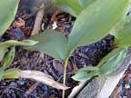
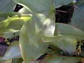
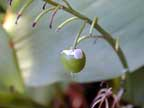

Lily of the valley
Convallaria majalis
Other names
Description
Perennial plant. Creeping roots give rise to pairs of simple oval leaves up to 25cm long. Flowering stalks are leafless and have a one sided, terminal inflorescence of drooping white bell shaped flowers with a strong attractive scent. Fruit is a red globular berry with several seeds.
Similar plants
Do not confuse with lily of the valley tree.
Distribution
Commonly cultivated in shady places in gardens.
Toxin
Cardiac glycosides (convallarin, convallamarin and convallotoxin) act on the heart. Convallarium binds to Na pumps acting as a positive ionotrope (increasing contractility of the heart) which leads to the development of a rapid and irregular heart rate which may lead to ventricular fibrillation, conduction block and asystole. Glycosides also cause gastrointestinal tract irritation.
Species affected
Mainly a danger to children who are attracted to the flowers and red berries. No reports of animal poisoning in NZ.
Clinical signs acute
Abdominal pain with vomiting and diarrhoea. Blurred vision, delirium, decrease in pulse. Animal may go into cardiac failure and develop arrhythmias.
Clinical signs chronic
Post mortem signs
PM grossly distended heart, congestion of lungs and abdominal organs. Animals may be found dead with evidence of terminal convulsions.
Diagnosis
From history, clinical signs, post mortem findings.
Differential diagnosis
Treatment
Stomach lavage, emetics, activated charcoal. Watch ECG and treat as necessary to control arrhythmias as in digoxin overdose.
Prognosis
Reasonable if animal survives first 24hrs.
Prevention
Control access to plant or plant trimmings.
References
Conner H.E. The Poisonous Plants In New Zealand. 1992. GP Publications Ltd, Wellington
Cooper M R, Johnson A W. Poisonous Plants and Fungi in Britan: Animals and Human Poisoning. Her Majesty’s Stationary Office. London. 1998
Parton K, Bruere A.N. and Chambers J.P. Veterinary Clinical Toxicology, 2nd ed. 2001. Veterinary Continuing Education Publication No. 208
|  plant |
||
|
 |
||
|
 |
||
|
|
|
|